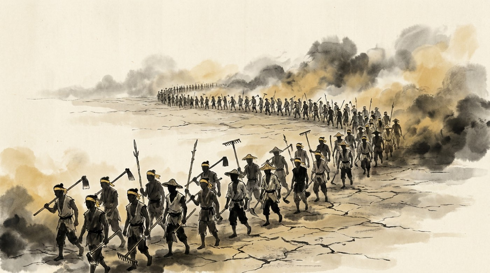

青い空は、もう死んだ
西暦184年。中国の人たちは、腹をすかせていました。
何年も日照りと洪水が続いて米も麦もとれず、はやり病が村ごと人を減らしていく。 それなのに都は、今までどおり税を取り立てました。 政治を動かしていたのは宦官という人たちで、 役人の職はお金で堂々と売り買いされていた。 お金を出して役人になった人は、赴任した先でそのぶんを取り返そうとします。 しぼり取られるのは、いつもいちばん下の人たちでした。
そこへ、張角という男が現れます。 彼は「太平道」という教えを広め、病気の人に水とおふだを配って回りました。 本当に治ったのか、治った気がしただけなのかは分かりません。 ただ、ほかに誰も助けてくれなかった。十年ほどで、信者は数十万人にふくれ上がります。
そして張角は合図を出しました。 「青い空はもう死んだ。次は黄色い空の番だ」—— 青い空とは漢という国のことです。 信者たちは目印に黄色い布を頭に巻き、同じ日に、全国八か所でいっせいに立ち上がりました。 これが黄巾の乱です。
あわてた都は、各地の有力者に「自分で兵を集めて、しずめてこい」と命じました。 これが、取り返しのつかない一手になります。 反乱そのものは、張角が病気で死んだこともあって、その年のうちに収まりました。 けれど、いちど自分の軍隊を持ってしまった人たちは、二度と武器を手放さなかった。 ここから百年ちかい戦乱が始まります。

黄巾の乱（184年）。数だけは多い農民の軍と、朝廷が集めた軍の戦い。 張角が病気で死んで、反乱は一年ももちませんでした。 このとき出撃した若手が、曹操・孫堅・劉備です。 つまり三国志の主役たちは、全員この戦いでデビューしています。
張角が魔法で風や砂をあやつった、という場面は小説の作り話です。 実際の太平道は、おまじないと薬草、それに困っている人への施しで広まった宗教でした。
ござ売りの青年
兵を集める立て札の前で、ひとりの青年がため息をついていました。 劉備、二十三歳。 先祖をたどると漢の皇族につながる——という家がらだけはあるものの、 今の暮らしはござとわらじを編んで売る毎日です。
そのため息を、後ろから聞きとがめた大男がいました。 張飛。 肉屋で、酒が好きで、声がやたらと大きい。 「男が国のために何もできないとは何ごとだ」とからんできます。 二人で酒屋に入ると、そこにもうひとり、赤い顔で見事なひげの男がすわっていました。 人を殺して故郷にいられなくなり、五年ほど流れ歩いていた 関羽です。
話してみると、三人の考えていることは同じでした。 翌日、張飛の家の裏にある桃の木の下で、三人はお香をたいて誓います。
「生まれた日は同じでなくてもいい。
死ぬ日は、同じでありたい」
これが桃園の誓い。三国志でいちばん有名な場面です。 血はつながっていないけれど、これから兄弟としてやっていく—— この関係を義兄弟といいます。 このあと三十六年、この約束は本当に守られました。 ただし守られ方は、三人が思っていたものとはちがいました。
桃園の誓いは小説の作り話で、歴史の記録には出てきません。 記録にあるのは「劉備・関羽・張飛は同じ部屋でねむり、兄弟のようだった」という一文だけ。 誓いの儀式はありませんでした。 でも、そう書きたくなるくらい仲がよかったのは本当のようです。
平和なら名役人、乱世なら悪がしこい英雄
同じ反乱をしずめるために、まったくちがうところから出てきた男がいます。 曹操、二十九歳。
家はお金持ちでした。ただし、おじいさんが宦官です。 当時、宦官の家というのは、お金はあっても見下される立場でした。 若いころの曹操は行いが悪く、遊んでばかりで、親せきにあきれられています。 ところが都の警備の役についたとき、法をやぶった有力者の身内を、 相手が誰かに関係なく棒で打ち殺しました。誰も手を出せなかった相手を、です。
人を見る目で有名だった許劭という人に「私はどんな人間ですか」と聞いたとき、 こう言われたと伝わります。 「世が平和なら優秀な役人。乱れていれば、悪がしこい英雄になる」。 半分は悪口です。
ふつうなら怒るところを、曹操は大声で笑ったといいます。 悪く言われた言葉を、そのまま自分の看板にしてしまった。 このかわし方が、そのままこの人の生き方になっていきます。
江東の虎
南でも、ひとりの男が名前を上げていました。 孫堅です。
十七歳のとき、船着き場で海賊が略奪しているのに出くわしました。 誰も動けない中、たった一人で崖をかけ上がり、手をふりまわします。 まるで後ろに大軍がひかえているかのように。海賊は本気で逃げ出したそうです。 そういう、思いきりのいい人でした。
黄巾の乱でも真っ先にとび込んで手がらを立て、 江東の虎と呼ばれるようになります。 のちに呉という国をつくる孫家は、この人から始まりました。 そばには、もう程普のようなベテランがついています。
もうひとり。四代続けて大臣を出した名家の息子、 袁紹も都で頭角を現していました。 北の国ざかいでは公孫瓚が異民族を追いはらっていて、 劉備は若いころ、この人のところで世話になっています。
役者は、静かにそろいつつありました。
宮廷が、はれつする
189年、皇帝が死にます。 あとをついだのは幼い少年でした。かわりに国を動かしたのは、その母である 何太后と、その兄の何進です。 何進はもともと肉屋でした。妹が皇后になったおかげで、いきなり 大将軍という最高位まで上がった人です。
その何進が、長年宮廷をにぎってきた宦官たちを皆殺しにしようとします。 ところが妹の何太后が反対しました。 彼女がここまで来られたのは宦官の後押しがあったからで、恩を感じていたのです。
決められない何進に、袁紹が最悪の入れ知恵をします。 「地方の軍を都に呼んで、おどしましょう」。 曹操は反対しました——宦官を始末するだけなら牢屋の役人ひとりで足りる、 軍を呼んだら国じゅうが乱れる、と。
そのとおりになりました。 軍が着く前に宦官たちが先に動き、何進は宮中に呼び出されて斬られます。 怒った袁紹たちが宮殿になだれ込んで宦官二千人を皆殺しにし、 その混乱の中で、幼い皇帝は都の外へ逃げ出しました。
夜の街道で、その皇帝を拾ったのが—— 西から呼ばれてやってきた董卓の軍でした。
- 飢えと悪い政治にたえかねた人たちが黄巾の乱を起こし、しずめるために各地の武将が軍を持った。反乱は終わっても、軍隊は残った。
- 劉備・関羽・張飛が出会い、曹操と孫堅も表舞台に立つ。まだ誰も、天下を取れるとは思っていない。
- 宮廷の内輪もめで宦官が全滅し、そのすきに董卓が皇帝を手に入れる。ここから本当の乱世が始まる。